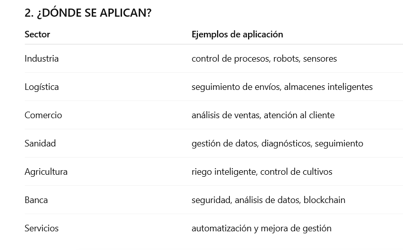
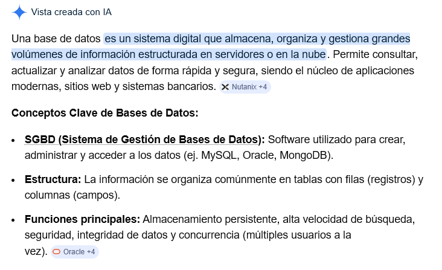
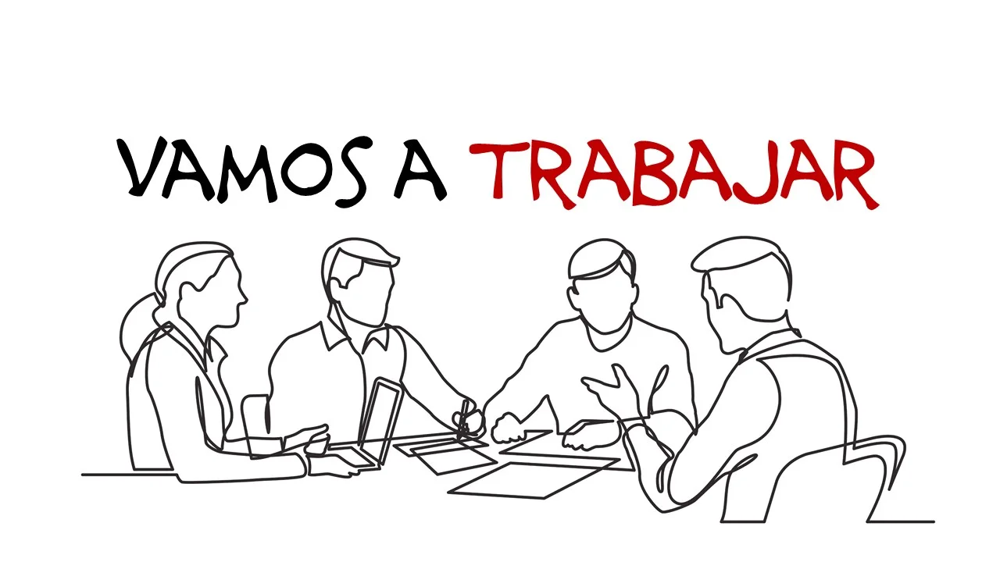

UD4-Cambios tecnológicos en Empresas
Sesión 2 - Aplicaciones profesionales TDH
RA4: Compara los sistemas de producción/prestación de servicios digitalizados con los sistemas clásicos
Criterios de evaluación trabajados: e, f, g, h
1. Objetivo
Identificar cómo se aplican las tecnologías digitales habilitadoras en empresas reales , comprendiendo:
- cómo ayudan a reducir costes y mejorar la competitividad ;
- en qué sectores productivos se usan;
- qué papel tienen los nuevos sistemas de almacenamiento y acceso a datos ;
- y qué mejoras concretas producen en cada etapa del proceso.
- probar algún tipo de este software online y documentarlo
En esta sesión se abordarán los principales saberes relacionados con la aplicación de las tecnologías digitales habilitadoras en el ámbito empresarial.
En primer lugar, se trabajará el papel de las TDH en la empresa, prestando atención a elementos como la sensórica, la automatización, las comunicaciones, la inteligencia artificial, el Internet de las cosas, el big data y la nube.
A partir de estos contenidos, el alumnado podrá comprender cómo las organizaciones actuales incorporan tecnologías que les permiten recopilar información, procesarla y utilizarla para mejorar su funcionamiento diario.
Además, se analizarán aplicaciones concretas en distintos sectores productivos y de servicios, como la industria, la logística, el comercio, la sanidad, la agricultura, la banca y otros entornos profesionales. También se introducirán sistemas de almacenamiento de datos no convencionales, como la nube, los data lakes, las bases de datos distribuidas y blockchain, relacionándolos con las necesidades de acceso y gestión de la información en la empresa. Todo ello permitirá identificar las mejoras asociadas a la digitalización, entre las que destacan la reducción de tiempos y errores, el ahorro de costes, la trazabilidad de los procesos, una mejor toma de decisiones y el aumento de la competitividad.

2. ALMACENAMIENTO DE DATOS NO CONVENCIONAL
El almacenamiento de datos en una empresa puede organizarse mediante modelos tradicionales y no convencionales.
En los sistemas tradicionales, uno de los más habituales es el modelo relacional o de tipo entidad-relación,
- en el que la información se estructura en tablas relacionadas entre sí mediante campos comunes, lo que permite ordenar, consultar y mantener los datos de forma lógica y segura. Este modelo es muy útil para gestionar información bien definida, como clientes, productos, pedidos o facturas.
- Junto a él, en los entornos actuales han surgido formas de almacenamiento no convencional, como la nube, los data lakes, las bases de datos distribuidas o blockchain, que permiten guardar grandes volúmenes de información, compartirla entre distintas áreas de la empresa y acceder a ella de forma más flexible, rápida y adaptada a los nuevos procesos digitalizados.
- Nube: acceso remoto a la información
- Data lakes: almacenamiento masivo de datos
- Bases de datos distribuidas: datos compartidos entre sistemas
- Blockchain: registro seguro y trazable

💻 Actividad: Investigación de software empresarial -> TDH y datos
Investiga acerca de las aplicaciones profesionales de los sectores mencionados anteriormente y añade ÍNDICE, capturas, enlaces, artículos, tutoriales, etc.
Busca información sobre 5 herramientas o plataformas online utilizadas en el entorno empresarial y relacionadas con la digitalización, el tratamiento de datos y la mejora de procesos. Debes investigar al menos:
- una herramienta para crear esquemas o tablas relacionales ,
- una plataforma de almacenamiento no convencional ,
- un software de gestión empresarial tipo Sage o SAP ,
- una solución del sector bancario y
- una herramienta del sector industrial con inteligencia artificial .
Puedes trabajar, por ejemplo, con Lucidchart para modelado y diagramación online, MongoDB Atlas como base de datos documental en la nube, Sage 50 como software de gestión empresarial, BBVA API_Market como solución digital del ámbito bancario e IBM Maximo Application Suite como plataforma industrial con IA para mantenimiento y gestión de activos. (Lucidchart)
Para cada software, elabora una ficha breve indicando: nombre, empresa o entidad responsable, sector en el que se utiliza, tipo de tecnología que emplea, utilidad principal, y qué mejora aporta a la empresa en aspectos como reducción de errores, ahorro de costes, acceso a datos, automatización o toma de decisiones. Consulta sus webs oficiales y resume la información con tus propias palabras. Puedes usar estas referencias oficiales: Lucidchart (diagramación online y modelado de sistemas y bases de datos), MongoDB Atlas (base de datos en la nube orientada a documentos), Sage 50 (gestión comercial y contabilidad), BBVA API_Market (integración de servicios bancarios mediante APIs) e IBM Maximo (operaciones industriales, mantenimiento e IA). (Lucidchart)
Productos a investigar
- Lucidchart – modelado visual y apoyo a esquemas de datos relacionales. (Lucidchart)
- MongoDB Atlas – almacenamiento no convencional en la nube, orientado a documentos. (MongoDB) (tutorial)
- Sage 50 – software de gestión empresarial y contabilidad. (Sage)
- BBVA API_Market – solución digital del sector bancario basada en open banking y APIs. (BBVA API_Market)
- IBM Maximo Application Suite – plataforma industrial con IA, analítica avanzada e IoT. (IBM)
Esos son un ejemplo, pero hay miles más que puedes intercambiar por algunos de esos.
Como alternativas a esas aplicaciones, puedes proponer dbdiagram para diseñar esquemas entidad-relación y diagramas de bases de datos de forma online; Supabase como opción moderna de base de datos y almacenamiento en la nube basada en PostgreSQL; Odoo como ERP alternativo a Sage o SAP, con versión en español y módulos de contabilidad, inventario, ventas o CRM; y Siemens Industrial AI o su entorno Industrial AI Suite para el sector industrial, donde la IA se aplica a automatización, mantenimiento y optimización de procesos. También podrías añadir herramientas como Microsoft Dynamics 365 , Oracle NetSuite o plataformas bancarias de APIs abiertas, según el enfoque que quieras dar a la actividad.
💻 Moodle & Portfolio
- Sube el enlace actualizado tu portfolio a Moodle y, si has generado algún archivo PDF o similar, súbelo también.
Entrega tu entrada con la investigación realizada y una conclusión final respondiendo a esta pregunta: ¿Qué software te parece más útil para una empresa actual y por qué?
- ¿Cómo vamos?¿necesitas otra hora más para probar más software?
